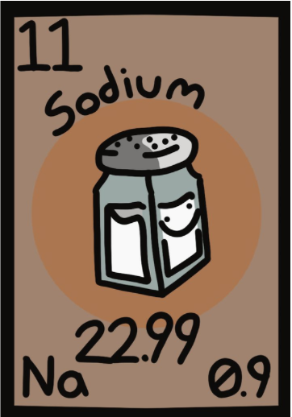
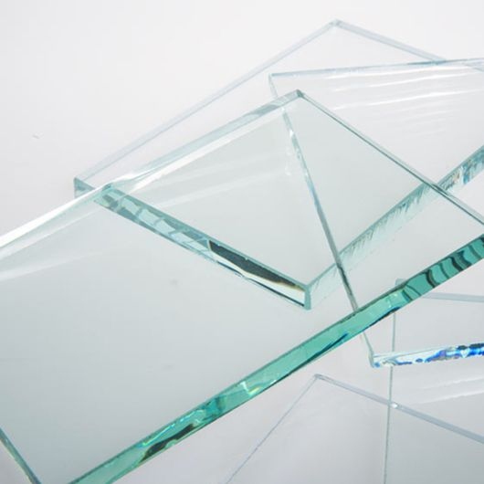

Atomic Number : 11
Atomic Mass : 22.99
Proton Number : 11
Neutron Number : 12
Category : Alkali Metal
Sodium compounds have been known and used since ancient times, especially in the form of salt. In 1807, English chemist Humphry Davy successfully isolated sodium for the first time by using electrolysis of molten sodium hydroxide. Davy discovered that sodium was a new chemical element and gave it the name sodium. The symbol “Na” comes from the Latin word “natrium,” which refers to sodium compounds. Sodium is rarely found as a pure element in nature because it reacts very easily with other elements. Today, sodium and its compounds are widely used in food, chemicals, industry, medicine, and manufacturing.
State at room temperature: Solid Colour: Silvery-white Odour: Odourless Taste: Salty in compounds such as sodium chloride Density: 0.97 g/cm³ Melting point: 97.79°C Boiling point: 883°C Solubility: Reacts with water Molecular form: Exists as a metallic solid
Sodium is a very reactive alkali metal. It has 1 valence electron, which it easily loses to form a sodium ion with a +1 charge. Sodium reacts rapidly with water to form sodium hydroxide and hydrogen gas: 2Na + 2H₂O → 2NaOH + H₂ It reacts with oxygen to form sodium oxides and other oxygen-containing compounds. Sodium also reacts readily with chlorine to form sodium chloride: 2Na + Cl₂ → 2NaCl Because sodium is highly reactive, it is rarely found as a pure element in nature.
Sodium is relatively abundant on Earth but is not usually found as a pure element because it is highly reactive. It is mainly found in compounds such as sodium chloride, which is common in seawater and rock salt. Sodium is also found in minerals such as feldspar and other rocks. Sodium ions are present in seawater and are important for many living organisms. Sodium compounds are found naturally in soil, water, and many minerals. Sodium is obtained commercially mainly from sodium chloride and other sodium-containing compounds.
Sodium and its compounds are very useful and are used in many different areas. Sodium chloride is used as table salt and is important for food preservation and cooking. Sodium compounds are also used to make glass, paper, soaps, detergents, and other chemicals. Sodium is used in some street lamps because sodium vapour produces a bright yellow-orange light. Sodium compounds are used in water treatment and in the production of many industrial chemicals. Sodium is also an important electrolyte in the human body and helps nerves and muscles function properly. Because sodium compounds have many useful properties, they are especially important in food, medicine, manufacturing, lighting, and chemical industries.




Sodium is the eleventh element on the periodic table and has the symbol Na. Sodium is a soft metal that can be cut relatively easily. Sodium is highly reactive and reacts strongly with water. Sodium has only 1 valence electron, which it easily loses during chemical reactions. Sodium compounds are responsible for the salty taste of table salt. Sodium ions are essential for the normal function of nerves and muscles in the human body. Sodium burns with a bright yellow flame, which is why sodium compounds are used in some types of lighting. Sodium is never normally found as a pure metal in nature because it reacts so easily with other substances.